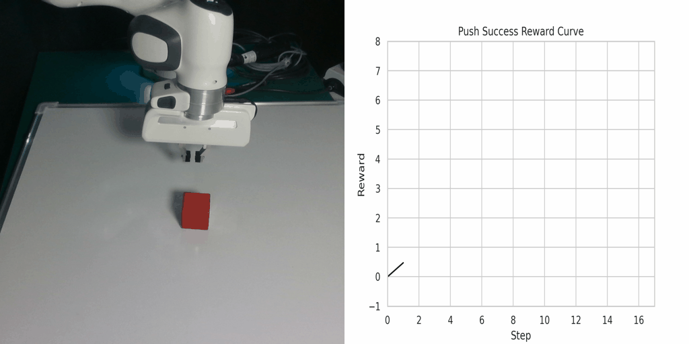
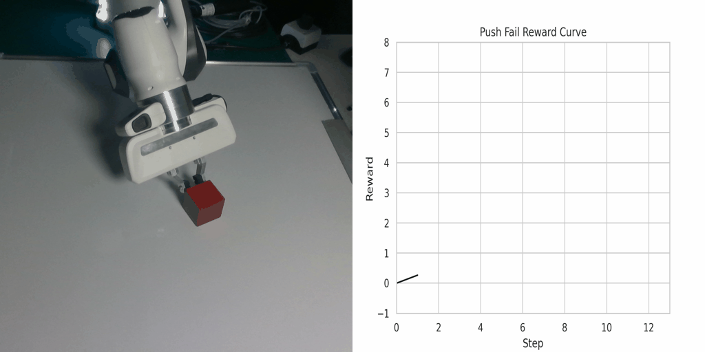
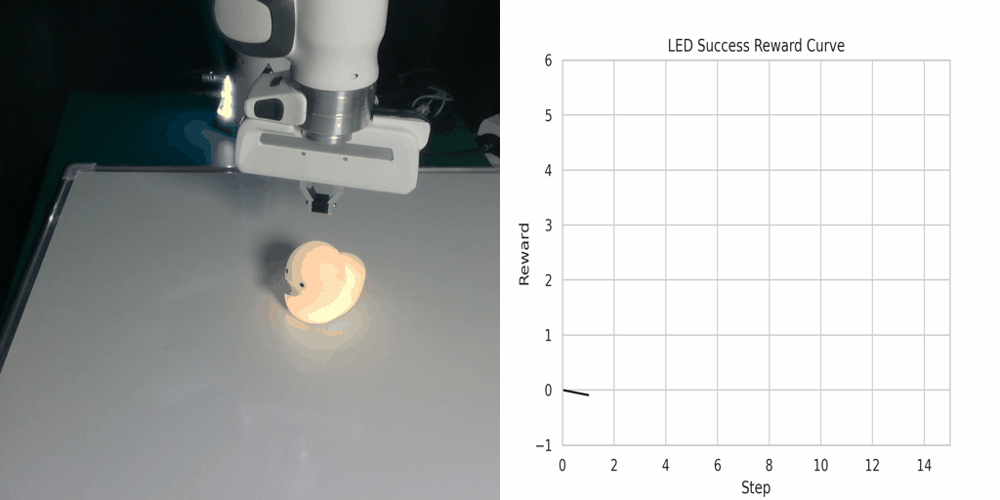
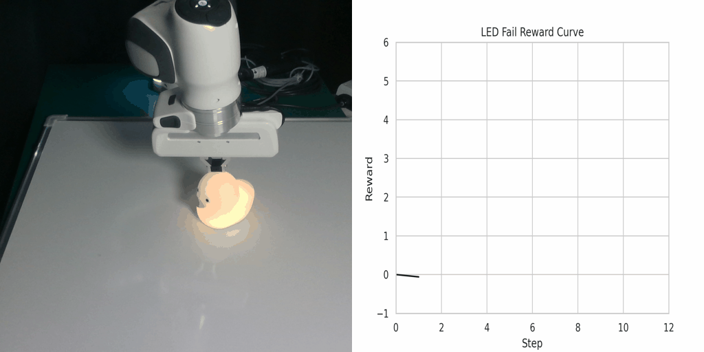
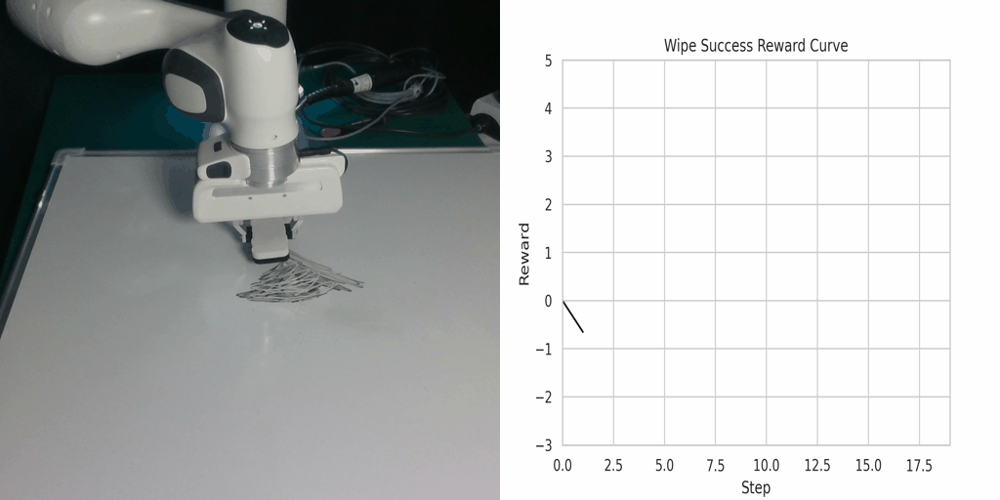
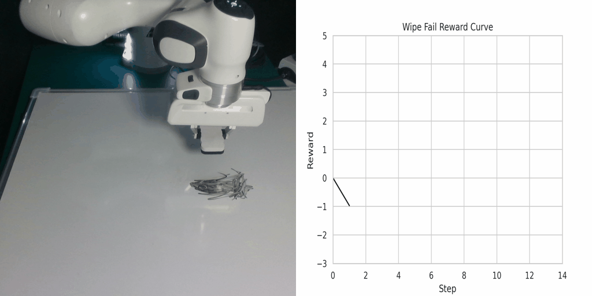

LfVoid can generate goal images using image editing methods and learn table-top manipulation tasks with visual reinforcement learning.
Abstract
Pre-trained text-to-image generative models can produce diverse, semantically rich,
and realistic images from natural language descriptions. Compared with language,
images usually convey information with more details and less ambiguity. In this
study, we propose Learning from the Void (LfVoid), a method that leverages the
power of pre-trained text-to-image models and advanced image editing techniques
to guide robot learning. Given natural language instructions, LfVoid can edit the
original observations to obtain goal images, such as “wiping” a stain off a table.
Subsequently, LfVoid trains an ensembled goal discriminator on the generated
image to provide reward signals for a reinforcement learning agent, guiding it
to achieve the goal. The ability of LfVoid to learn with zero in-domain training
on expert demonstrations or true goal observations (the void) is attributed to the
utilization of knowledge from web-scale generative models. We evaluate LfVoid
across three simulated tasks and validate its feasibility in the corresponding real
world scenarios. In addition, we offer insights into the key considerations for the
effective integration of visual generative models into robot learning workflows.
We posit that our work represents an initial step towards the broader application
of pre-trained visual generative models in the robotics field.
Method
LfVoid consists of two parts: (a) Goal image generation and (b) Example-Based Visual RL.
(a) Goal image generation applies image editing on the initial observations according
to different editing instructions to obtain a visual goal dataset.
(b) Example-Based Visual RLperform reinforcement learning on the
generated dataset to achieve the desired goal image in various environments.
Goal Generation Results
Goal generation results of LfVoid on appearance-based editing. The Wipe task and LED task require changing the appearance of an object, such as the surface of a table and the color of a LED light.
Goal generation results of LfVoid on structure-based editing. The Push task requires changing the structure of an image, such as relocating the red cube from the center of an image to the corner.
General editing results of LfVoid. We report the performance of LfVoid on general editing tasks and show that LfVoid can better perform localized edits and preserve the background of the original image.
Additional results of goal images generated by LfVoid.
Visual Reinforcement Learning Results
The episode reward curve of simulation tasks. We show the results of the CLIP baseline (CLIP),
InstructPix2Pix baseline (IP2P), using real goal image as an upper bound (Real Goal), and LfVoid (Ours)
The numerical metrics of simulation tasks. We report the success rate for LED and Push, and
the number of stain patches cleaned for Wipe.
Visualization of the reward function on Real Robot environments. We visualize the classifier-based reward function
obtained by the goal images generated through LfVoid (Ours) and other baselines on successful trajectories.
Results show that the reward function obtained by LfVoid can provide near monotonic dense signals, comparable to those from the real goals.
Additionally, we provide some visualization videos of the classifier-based reward functions obtained by LfVoid on
several successful and failed trajectories. We can observe that our reward function can assign monotonic increasing values
for the successful demonstrations, while for failure trajectories the reward curve is almost flat.
These visualizations further demonstrate LfVoid's plausibility for real world robotic tasks.

Push Success

Push Failure

LED Success

LED Failure

Wipe Success

Wipe Failure
BibTeX
@misc{gao2023pretrained,
title={Can Pre-Trained Text-to-Image Models Generate Visual Goals for Reinforcement Learning?},
author={Jialu Gao and Kaizhe Hu and Guowei Xu and Huazhe Xu},
year={2023},
eprint={2307.07837},
archivePrefix={arXiv},
primaryClass={cs.RO}
}
Acknowledgements
This work is supported by National Key R&D Program of China (2022ZD0161700).
 LfVoid consists of two parts: (a) Goal image generation and (b) Example-Based Visual RL.
LfVoid consists of two parts: (a) Goal image generation and (b) Example-Based Visual RL. Goal generation results of LfVoid on appearance-based editing. The Wipe task and LED task require changing the appearance of an object, such as the surface of a table and the color of a LED light.
Goal generation results of LfVoid on appearance-based editing. The Wipe task and LED task require changing the appearance of an object, such as the surface of a table and the color of a LED light.
 Goal generation results of LfVoid on structure-based editing. The Push task requires changing the structure of an image, such as relocating the red cube from the center of an image to the corner.
Goal generation results of LfVoid on structure-based editing. The Push task requires changing the structure of an image, such as relocating the red cube from the center of an image to the corner.
 General editing results of LfVoid. We report the performance of LfVoid on general editing tasks and show that LfVoid can better perform localized edits and preserve the background of the original image.
General editing results of LfVoid. We report the performance of LfVoid on general editing tasks and show that LfVoid can better perform localized edits and preserve the background of the original image.
 Additional results of goal images generated by LfVoid.
Additional results of goal images generated by LfVoid.
 The episode reward curve of simulation tasks. We show the results of the CLIP baseline (CLIP),
InstructPix2Pix baseline (IP2P), using real goal image as an upper bound (Real Goal), and LfVoid (Ours)
The episode reward curve of simulation tasks. We show the results of the CLIP baseline (CLIP),
InstructPix2Pix baseline (IP2P), using real goal image as an upper bound (Real Goal), and LfVoid (Ours)
 The numerical metrics of simulation tasks. We report the success rate for LED and Push, and
the number of stain patches cleaned for Wipe.
The numerical metrics of simulation tasks. We report the success rate for LED and Push, and
the number of stain patches cleaned for Wipe.
 Visualization of the reward function on Real Robot environments. We visualize the classifier-based reward function
obtained by the goal images generated through LfVoid (Ours) and other baselines on successful trajectories.
Results show that the reward function obtained by LfVoid can provide near monotonic dense signals, comparable to those from the real goals.
Visualization of the reward function on Real Robot environments. We visualize the classifier-based reward function
obtained by the goal images generated through LfVoid (Ours) and other baselines on successful trajectories.
Results show that the reward function obtained by LfVoid can provide near monotonic dense signals, comparable to those from the real goals.